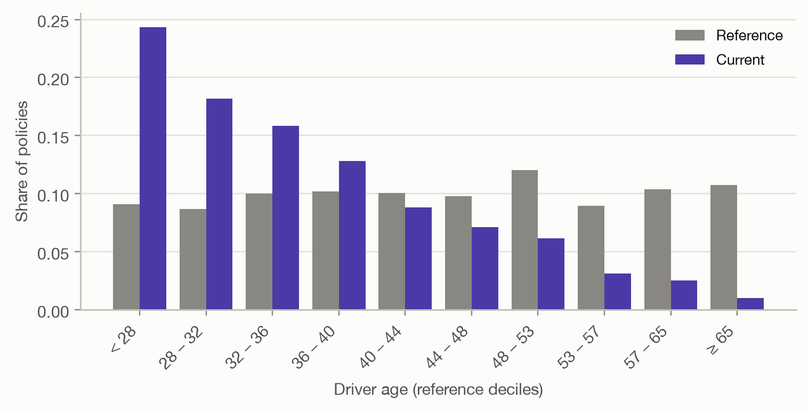
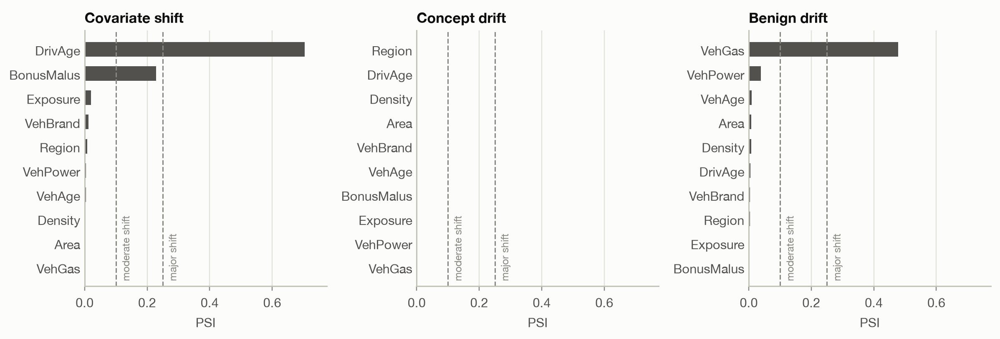
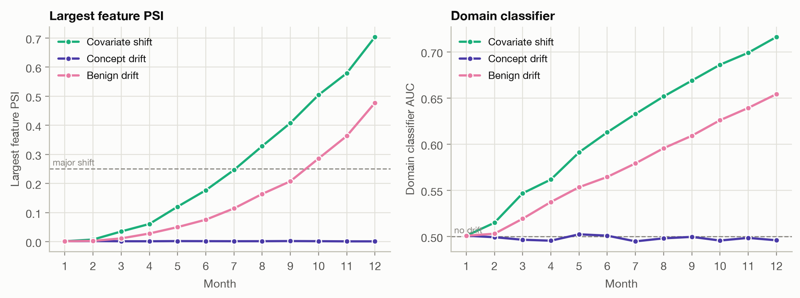
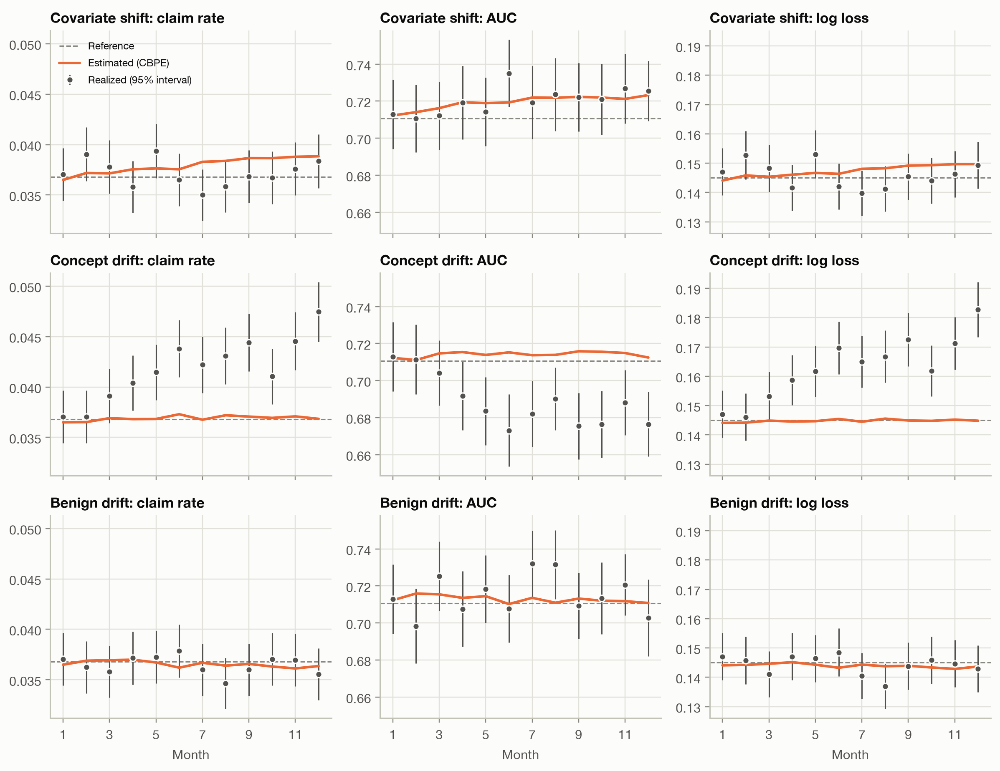
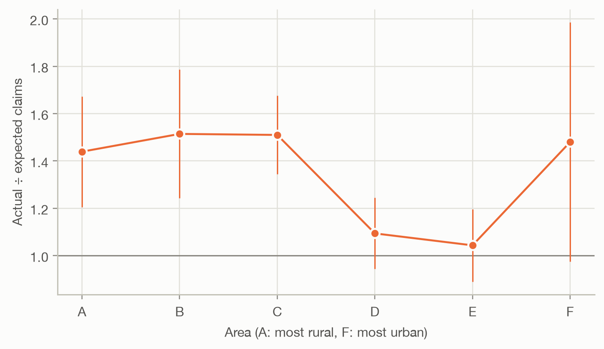

def monitor(batch: pd.DataFrame) -> dict:
X, y = batch[BINARY_FEATURES], batch["HasClaim"].to_numpy()
p = gbm.predict_proba(X)[:, 1]
# Input drift: each feature, and all features together
row = {f: population_stability_index(reference[f], X[f]) for f in BINARY_FEATURES}
row["domain AUC"] = domain_classifier_auc(reference[BINARY_FEATURES], X)
# Prediction drift
row["score PSI"] = population_stability_index(p_ref, p)
# Estimated performance (no outcomes needed)
row.update({f"est. {k}": v for k, v in cbpe(y_ref, p_ref, p).items()})
# Realized performance with standard errors (once the outcomes are in)
loss = -(y * np.log(p) + (1 - y) * np.log(1 - p))
auc_boot = paired_bootstrap(auc_rank, y, {"GBM": p}, n_boot=200)["GBM"]
row.update({
"positive rate": y.mean(), "se positive rate": np.sqrt(y.mean() * (1 - y.mean()) / y.size),
"AUC": auc_rank(y, p), "se AUC": auc_boot.std(),
"log loss": loss.mean(), "se log loss": loss.std() / np.sqrt(y.size),
})
return row
results = {
s: pd.DataFrame([monitor(b) for _, b in months[s].groupby("month")], index=range(1, N_MONTHS + 1))
for s in SCENARIOS
}Drift
Has the model’s performance changed since it was validated, and can we tell before the claims come in? PSI, domain classifiers and confidence-based performance estimation on simulated drift.
Question answered: has the model’s performance changed since it was validated, and can we tell before the outcomes come in?
Every earlier page measured performance on a test set with known outcomes. In production the outcomes arrive late. A claim may be reported weeks after the accident and settled years later, so a pricing model’s AUC or deviance for this month’s policies can only be computed long after the policies were written. Meanwhile the portfolio changes: new distribution channels, new vehicles, new regulation. Drift monitoring watches what is available right away (the features and the model’s predictions) for signs that performance may have changed.
This page covers three tools, from simple to more ambitious:
- the population stability index (PSI), which compares the distribution of one feature with its distribution in the reference data;
- a domain classifier, which looks at all features at once;
- confidence-based performance estimation (CBPE), which estimates the model’s AUC and log loss without any outcomes.
It also shows the kind of drift that none of them can see.
Two kinds of drift
A model learns the joint distribution of features \(x\) and outcome \(y\), which splits into two parts:
\[ P(x, y) = P(y \mid x) \, P(x). \]
- Covariate shift: \(P(x)\) changes, \(P(y \mid x)\) doesn’t. The portfolio contains different policies, but a given policy is as risky as before. A well-specified model keeps predicting correctly for each policy, though portfolio-level metrics can still move, because AUC and log loss depend on the mix of policies.
- Concept drift: \(P(y \mid x)\) changes. The same policy is now more (or less) risky than the model believes. The model is wrong, and nothing in \(x\) shows it.
Feature-based monitoring can only detect the first kind. Whether a detected shift matters is a separate question.
The setup: a year of simulated production
The test set is split in half. One half is the reference: labelled data the model was validated on, as on every earlier page. The other half is a pool from which we draw 12 monthly production batches of 20,000 policies each. Drift grows linearly: month 1 has none, month 12 the full effect. We monitor the GBM for HasClaim. The split into halves is stratified by claim, fuel type, area and age band, so that the segments the scenarios change start out alike in both halves: differences between reference and production then come from the simulated drift, not from the luck of the split.
| Scenario | What changes by month 12 | A plausible cause |
|---|---|---|
| Covariate shift | Young drivers are sampled more often: the average driver age falls from 45 to 35. Risk given the features is unchanged. | A new online channel attracts young drivers |
| Concept drift | The features are unchanged, but the claim rate in the rural areas A, B, C (55% of policies) rises by 50%. | More traffic on rural roads, or a run of storms |
| Benign drift | The share of diesel cars falls from 49% to 15%. The models barely use fuel type, and diesel and petrol cars have similar claim rates. | Diesel bans in city centres |
A monthly monitoring job computes the following for each batch. The first three blocks need only the features; the last needs the outcomes, which in reality would arrive months later.
Population stability index
The PSI compares a feature’s distribution in the current data with the reference. Cut the feature into bins (deciles of the reference data for a numeric feature, one bin per category otherwise), compute the share of policies in each bin in both samples, \(r_k\) and \(c_k\), and add up
\[ \text{PSI} = \sum_k (c_k - r_k) \ln \frac{c_k}{r_k}. \]
Each term is positive whenever \(c_k \neq r_k\), so shifts in different directions don’t cancel. The PSI is the Kullback–Leibler divergence taken in both directions, \(\text{KL}(c \,\|\, r) + \text{KL}(r \,\|\, c)\). Credit-risk practice gave it widely used rules of thumb: below 0.1 the distribution is stable, 0.1–0.25 is a moderate shift, above 0.25 a major one.
Here are driver ages in the last month of the covariate-shift scenario:
Code
t_age = psi_table(reference["DrivAge"], cov["DrivAge"])
fig, ax = plt.subplots(figsize=(7, 3.6))
plot_psi_bins(t_age, ax=ax, xlabel="Driver age (reference deciles)")
fig.tight_layout()
Code
t_age.assign(**{"current − reference": t_age["current"] - t_age["reference"]})[
["reference", "current", "current − reference", "contribution"]
].T.round(3)| < 28 | 28 – 32 | 32 – 36 | 36 – 40 | 40 – 44 | 44 – 48 | 48 – 53 | 53 – 57 | 57 – 65 | ≥ 65 | |
|---|---|---|---|---|---|---|---|---|---|---|
| reference | 0.091 | 0.087 | 0.100 | 0.102 | 0.101 | 0.098 | 0.121 | 0.089 | 0.104 | 0.108 |
| current | 0.243 | 0.182 | 0.159 | 0.128 | 0.088 | 0.071 | 0.062 | 0.031 | 0.025 | 0.010 |
| current − reference | 0.152 | 0.095 | 0.059 | 0.026 | -0.012 | -0.027 | -0.059 | -0.058 | -0.079 | -0.097 |
| contribution | 0.150 | 0.070 | 0.027 | 0.006 | 0.002 | 0.008 | 0.040 | 0.061 | 0.111 | 0.229 |
The youngest bins more than doubled and the oldest shrank, giving a PSI of 0.70, a major shift. Computing the PSI of every feature in the last month of each scenario:
Code
fig, axes = plt.subplots(1, 3, figsize=(11, 3.8), sharey=False)
xmax = 1.1 * max(results[s].loc[N_MONTHS, BINARY_FEATURES].max() for s in SCENARIOS)
for ax, (s, name) in zip(axes, SCENARIOS.items()):
plot_psi(results[s].loc[N_MONTHS, BINARY_FEATURES].astype(float), ax=ax, title=name, xmax=xmax)
fig.tight_layout()
- Covariate shift: driver age shifts strongly. So does the bonus-malus level (PSI 0.23), because young drivers have not yet earned a bonus: shifting one feature shifts every feature correlated with it.
- Concept drift: every PSI is close to 0. The features really are unchanged, so feature monitoring has nothing to find.
- Benign drift: fuel type crosses the ‘major’ threshold (0.48), although, as the performance estimates below will show, it hardly matters to the model.
NoteWhy not a statistical test?
The two-sample Kolmogorov–Smirnov test (numeric features) or the chi-squared test (categories) asks whether two samples come from exactly the same distribution. With thousands of policies per month, it detects shifts far too small to matter.
In month 2 of the covariate-shift scenario, driver age has a PSI of only 0.007, yet the KS test gives p < 0.001. Tests answer ‘is there any difference?’; the PSI measures how large the difference is, which is what monitoring needs.
PSI has limits:
- It looks at one feature at a time. A change in how features combine (young drivers suddenly owning powerful cars) can leave every marginal distribution intact.
- Binning matters. Deciles of the reference data are the usual choice. Features with few distinct values, such as the bonus-malus level (more than half the policies sit at 50), get fewer bins.
- Its thresholds are conventions, not statistical results. With small batches, sampling noise alone can push the PSI past 0.1.
Applied to the model’s predictions instead of a feature, the PSI measures prediction drift. It has the advantage of summarizing all features in the units that matter to the model; we return to it below.
Domain classifier
To look at all features together, train a classifier to tell the two samples apart. Label reference policies 0 and current policies 1, fit a model to predict the label from the features, and measure its cross-validated AUC:
- AUC ≈ 0.5: the classifier can’t tell the samples apart; no detectable drift.
- AUC well above 0.5: the samples differ, in a way the classifier has learned. Its feature importances show which features drive the difference.
Any classifier works; we use a gradient boosting machine, so interactions between features are covered too.
Code
fig, axes = plt.subplots(1, 2, figsize=(10, 3.8))
max_psi = pd.DataFrame({n: results[s][BINARY_FEATURES].max(axis=1) for s, n in SCENARIOS.items()})
plot_over_time(max_psi, ax=axes[0], ylabel="Largest feature PSI", hlines={"major shift": 0.25})
axes[0].set_title("Largest feature PSI")
domain = pd.DataFrame({n: results[s]["domain AUC"] for s, n in SCENARIOS.items()})
plot_over_time(domain, ax=axes[1], ylabel="Domain classifier AUC", hlines={"no drift": 0.5})
axes[1].set_title("Domain classifier")
fig.tight_layout()
Both detectors tell the same story. The covariate and benign shifts grow steadily, and the domain classifier reaches an AUC of 0.72 and 0.65 by the last month. The concept drift stays invisible: the domain classifier hovers around 0.50, as it should when the two samples come from the same distribution.
The domain classifier’s AUC is a better single number than a list of PSIs: one value per month, covering every feature and interaction. But like the PSI it answers whether the inputs changed, not whether the model got worse. The benign drift raises both alarms without affecting the model at all.
Estimating performance without outcomes
Confidence-based performance estimation (CBPE) goes one step further: it estimates the model’s metrics directly. The idea is to trust the model’s own probabilities. If a policy has a predicted claim probability of 4%, then on average it contributes 0.04 of a claim and 0.96 of a non-claim. Adding these expected counts over the batch gives an expected confusion matrix at every threshold, and from it an expected ROC curve and an expected AUC. Other metrics follow the same way. For log loss, with \(\hat q_i\) the probability taken as the truth,
\[ \widehat{\text{log loss}} = -\frac{1}{n} \sum_i \left[ \hat q_i \ln p_i + (1 - \hat q_i) \ln (1 - p_i) \right], \]
and the expected claim rate is simply the average of \(\hat q_i\).
This only works if the probabilities are calibrated, so CBPE first recalibrates them on the labelled reference data: \(\hat q_i\) is the observed claim rate among reference policies with a prediction like \(p_i\) (isotonic regression, as for the CORP reliability curve on the calibration page). Then:
- under covariate shift, \(P(y \mid x)\) is unchanged, so calibration carries over to the new portfolio, and CBPE follows the real performance, even when it changes;
- under concept drift, the recalibration map is out of date, and CBPE keeps reporting the old performance.
Here is the estimate (line) against the realized value (points, with 95% intervals) for each scenario and metric. In reality the points would only appear months later.
Code
metrics = {"positive rate": "claim rate", "AUC": "AUC", "log loss": "log loss"}
ref_values = {"positive rate": y_ref.mean(), "AUC": auc_rank(y_ref, p_ref), "log loss": log_loss(y_ref, p_ref)}
fig, axes = plt.subplots(3, 3, figsize=(11, 8.5), sharex=True, sharey="col")
for i, (s, name) in enumerate(SCENARIOS.items()):
r = results[s]
for j, (m, label) in enumerate(metrics.items()):
t = pd.DataFrame({
"estimated": r[f"est. {m}"], "realized": r[m],
"lower": r[m] - 1.96 * r[f"se {m}"], "upper": r[m] + 1.96 * r[f"se {m}"],
})
ax = axes[i, j]
plot_estimated_vs_realized(t, label, ax=ax, reference=ref_values[m])
ax.set_title(f"{name}: {label}")
ax.set_ylabel("")
if i < 2:
ax.set_xlabel("")
axes[0, 0].legend(loc="upper left", fontsize=8)
fig.tight_layout()
Reading the rows:
- Covariate shift: the estimates move with the portfolio. Between the first and last three months, CBPE expects the claim rate to rise by 5% (young drivers claim more) and the AUC to rise by +0.008: a portfolio with a wider range of risks is easier to rank. The realized AUC follows (+0.013). A large drift in the inputs, and the model copes, even slightly improves. This is the case CBPE is built for.
- Concept drift: the estimates are flat, because nothing the model sees has changed, but the realized claim rate climbs: in the last three months it is 20% above the estimate, and the realized log loss rises with it. The realized AUC falls by 0.029: the rural policies, which the model rates as low risk, now have more claims, so its ranking is worse too. Every label-free method misses this scenario.
- Benign drift: estimated and realized metrics stay close to the reference throughout. The fuel-type shift that crossed the PSI’s ‘major’ threshold is irrelevant to performance.
In the covariate-shift row, the realized claim rate does not rise as estimated. That is the luck of a small group, not a flaw in CBPE. The batches draw their young drivers from the same 4,941 drivers aged 25 or under in the pool, and these happen to have 12% fewer claims than the model expects (A/E 0.88, standard error 0.05). On the training data the model is well calibrated for this age group (A/E 1.02). Because the scenario oversamples the same young drivers month after month, their luck repeats every month instead of averaging out.
More generally, the realized points scatter around the estimates, sometimes by more than one might expect. With 20,000 policies and about 736 claims per month, the realized AUC of a single month has a standard error of about 0.009. Realized metrics are themselves estimates: judge each against its interval, as on the model comparison page, rather than reacting to every dip.
NoteCBPE’s assumptions
CBPE needs calibrated probabilities, which the recalibration on reference data provides, and no concept drift, which it cannot check. It also assumes the calibration learned on the reference data holds for every kind of policy in the new portfolio: if the model is well calibrated overall but miscalibrated for young drivers, a shift towards young drivers biases the estimate. Treat CBPE as an early warning, not as a substitute for the realized metrics once outcomes arrive.
For continuous targets the analogous method is direct loss estimation (DLE): fit a second model on the reference data that predicts each observation’s loss (squared error, deviance) from its features and prediction, and average its predictions over the new batch. For pure premium, where a few large claims dominate every loss, that second model has very little signal to learn from, so we don’t demonstrate it here.
Catching concept drift
Concept drift is only visible in the outcomes. The tools are those of the calibration page, applied as soon as outcomes arrive: compare actual with expected claims (A/E), overall and by segment. Once the outcomes for the last month of the concept-drift scenario are in, splitting A/E by area points straight at the cause:
Code
p_con = gbm.predict_proba(con[BINARY_FEATURES])[:, 1]
areas = sorted(con["Area"].unique())
rows = []
for a in areas:
s = (con["Area"] == a).to_numpy()
y_a = con.loc[s, "HasClaim"].to_numpy()
se = np.sqrt(y_a.mean() * (1 - y_a.mean()) / s.sum())
rows.append({"actual": y_a.mean(), "lower": y_a.mean() - 1.96 * se, "upper": y_a.mean() + 1.96 * se,
"GBM": p_con[s].mean()})
ae = pd.DataFrame(rows, index=range(1, len(areas) + 1))
fig, ax = plt.subplots(figsize=(6.5, 3.8))
plot_segments(ae, ["GBM"], ax=ax, ratio=True, xlabel="Area (A: most rural, F: most urban)", ylabel="Actual ÷ expected claims")
ax.set_xticks(ae.index, areas)
ax.get_legend().remove()
fig.tight_layout()
The rural areas A, B, C have clearly more claims than the model expects. Areas D and E have about as many as expected; area F, the smallest, is too noisy to tell either way. Two practical consequences:
- Outcomes arrive gradually. Claim counts are known within weeks or months, long before claim costs are settled. Monitoring claim frequency (as here) gives an early read; cost-based metrics such as deviance or Gini for pure premium follow much later.
- Segment-level A/E needs volume. A month of one segment is noisy; pooling several months, or using a cumulative A/E chart, makes slow drift visible sooner.
What each method can see
Code
def summary(r):
feats = r.loc[N_MONTHS, BINARY_FEATURES].astype(float)
return {
"largest feature PSI": f"{feats.max():.2f} ({feats.idxmax()})",
"score PSI": f"{r.loc[N_MONTHS, 'score PSI']:.3f}",
"domain classifier AUC": f"{r.loc[N_MONTHS, 'domain AUC']:.2f}",
"est. claim rate change": f"{rel(r, 'est. positive rate'):+.0%}",
"realized claim rate change": f"{rel(r, 'positive rate'):+.0%}",
"est. AUC change": f"{change(r, 'est. AUC'):+.3f}",
"realized AUC change": f"{change(r, 'AUC'):+.3f}",
}
pd.DataFrame({name: summary(results[s]) for s, name in SCENARIOS.items()})| Covariate shift | Concept drift | Benign drift | |
|---|---|---|---|
| largest feature PSI | 0.70 (DrivAge) | 0.00 (Region) | 0.48 (VehGas) |
| score PSI | 0.013 | 0.001 | 0.004 |
| domain classifier AUC | 0.72 | 0.50 | 0.65 |
| est. claim rate change | +5% | +1% | -1% |
| realized claim rate change | -1% | +18% | +0% |
| est. AUC change | +0.008 | +0.002 | -0.003 |
| realized AUC change | +0.013 | -0.029 | +0.000 |
The score PSI deserves a second look. It never exceeded 0.013 in every scenario, far below any threshold, even under the covariate shift that moved driver age by a PSI of 0.70. The model’s predictions depend on many features, and a shift in one of them moves the score distribution only a little. Prediction drift is a sensitive alarm only when the shift touches the features the model relies on most.
| Method | Needs outcomes? | Detects covariate shift | Detects concept drift | Says whether performance changed |
|---|---|---|---|---|
| PSI per feature | no | yes, one feature at a time | no | no |
| Domain classifier | no | yes, including interactions | no | no |
| Prediction drift (score PSI) | no | when it affects the score | no | no |
| CBPE / DLE | no | yes | no | yes, under covariate shift |
| Realized metrics, A/E by segment | yes | yes | yes | yes, after a delay |
Takeaways
- Outcomes arrive late, so production monitoring starts with what is available now: features and predictions.
- Covariate shift (new kinds of policies) shows up in the features. Concept drift (the same policies behaving differently) doesn’t, and every label-free method misses it.
- The PSI measures how much one feature’s distribution moved; the domain classifier checks all features and their interactions at once. Both detect change, not harm: a large shift can leave the model unaffected (benign drift), or even slightly improve its AUC (covariate shift).
- CBPE turns the model’s calibrated probabilities into estimated metrics. It follows real performance under covariate shift and is blind to concept drift.
- The only defence against concept drift is to compare predictions with outcomes as they arrive: A/E overall and by segment, judged against sampling noise.